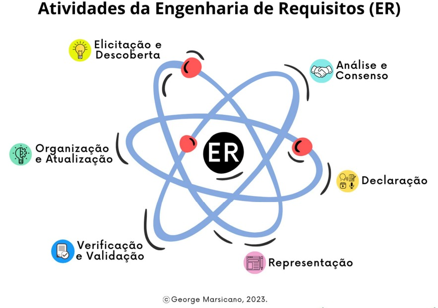
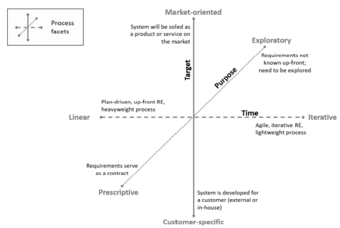

PROCESSO DE ENGENHARIA DE REQUISITOS
Histórico de Revisão
| Data | Versão | Descrição | Autor |
|---|---|---|---|
| 26/9/2023 | 0.1 | Criação do documento | Luciano de Freitas |
| 26/9/2023 | 0.2 | Documentação dos processos de Engenharia de Requisitos | Artur Rodrigues e João Barreto |
| 27/9/2023 | 0.3 | Refatoração e correção da documentação dos processos de Engenharia de Requisitos | Artur Rodrigues, João Barreto e Luciano de Freitas |
| 15/11/2023 | 0.4 | Alterações nas atividades de ER do processo | Luciano de Freitas |
Processos de Engenharia de Requisitos (ER)
Segundo MARSICANO (2023)¹, o Processo de Engenharia de Requisitos define quais são as etapas essenciais para a construção de um software, sendo aplicado em metodologias ágeis ou em processos dirigidos a plano. A Figura 1 mostra as atividades pertencentes à ER:
Figura 1 - Atividades da Engenharia de Requisitos

Fonte: MARSICANO, George (2023)
Como definido no artefato de Processo de Desenvolvimento de Software, a equipe escolheu pela metodologia Scrum/XP, em que as características que serão obordadas para o projeto estão descritas na parte de Características e Adaptações do Processo Escolhido do mesmo artefato. Características as quais serão citadas neste artefato e relacionadas aos processos de ER.
Facetas do processo
Uma vez que definidas as tarefas da Engenharia de Requisitos, é necessário estabelecer uma abordagem ou procedimento para realizá-las. No Handbook for the CPRE Foundation Level according to the IREB Standard, publicado pelo International Requirements Engineering Board (IREB), é apresentado um método para definir um processo de Engenharia de Requisitos com base na análise das diversas dimensões desse processo. É preciso analisar quais características extremas de cada aspecto se relacionam com o conhecimento atual e as expectativas em relação ao produto a ser desenvolvido. Com base nessa análise, juntamente com as definições previamente estabelecidas sobre o ciclo de vida e o processo de desenvolvimento de software, é possível estabelecer um processo a ser seguido para a execução das atividades de Engenharia de Requisitos. A Figura 2 ilustra as diferentes dimensões desse processo:
Figura 2 - Facetas da Engenharia de Requisitos.

Fonte: Handbook IREB CPRE Foundation Level, 2022
A partir da descrição das facetas, é possível definir qual o melhor processo a ser utilizado no processo, sendo então escolhido o modelo Participativo, que engloba as facetas: iterativo, exploratório e cliente específico. Essa escolha foi baseada nos seguintes requisitos:
- O projeto será desenvolvido em etapas de curto ciclo com um feedback contínuo por parte do cliente;
- Os requisitos do projeto não são totalmente conhecidos no início, havendo a necessidade de explorá-los ao longo de seu desenvolvimento;
- O projeto está sendo feito para atender às necessidades de um cliente específico. Logo, a participação do mesmo é de extrema importância no desenvolvimento do produto.
Ferramentas
As ferramentas foram selecionadas de modo a facilitar a comunicação entre os membros da equipe e alavancar, na medida do possível, a produtividade e criatividade. Nesse sentido, as ferramentas são as seguintes, listadas na Tabela 1:
Tabela 1 - Ferramentas utilizadas no projeto.
| Logo | Ferramenta | Finalidade |
|---|---|---|
 |
Discord | Realizar as Sprints e Dailies |
 |
Mural | Ferramenta visual para atividades colaborativas remotas |
 |
Canva | Ferramenta visual para criação de apresentações e documentos de forma colaborativa |
 |
Github e Gitpages | Armazenar e apresentar a documentação do projeto, bem como o código-fonte do produto, além de organização das atividades da equipe. |
 |
Microsoft Teams | Realizar as reuniões semanais e gravar os vídeos das apresentações |
 |
VSCode | Programação do projeto e edição da github pages |
 |
Manter a comunicação entre os integrantes | |
 |
Youtube | Compartilhar apresentações e disponibilizar as reuniões semanais |
 |
Figma | Prototipação do projeto |
Fonte: Autores, 2023
Atividades de Engenharia de Requisitos
As tabelas 2 a 6 mostram a relação entre as atividades do Processo de Engenharia de Requisitos, a organização das sprints, os métodos do Scrum e do XP utilizados, as ferramentas necessárias e a definição do que será entregue naquela etapa.
Pré-planejamento
Tabela 2 - Processos da Engenharia de Requisitos (ER) envolvidos no Pré-Planejamento
| Atividades | Métodos | Ferramentas | Entrega |
|---|---|---|---|
| Elicitação e descoberta | Entrevista com o cliente e Lean Inception | Microsoft Teams, Discord, Whatsapp, Mural | Lista de personas, conjunto de requisitos brutos |
| Análise e consenso | Lean Inception e Brainstorming | Discord, e Mural | Lista de personas, conjunto de requisitos funcionais e não funcionais |
| Declaração | Estruturação segundo o SAFe | GitHub, Canva | Backlog SAFe com histórias de usuário (US) e critérios de aceitação |
| Organização e Atualização | MoSCoW e pontuação por entendimento técnico das histórias | GitHub, Canva | Histórias de usuário priorizadas segundo valor de negócio e entedimento técnico |
| Verificação e Validação | Checklist e revisão informal de verificação e validação | GitHub, Canva, Discord, Whatsapp | Resultados dos checklist e feedbacks da revisão |
Fonte: Autores, 2023
Release Planning
Tabela 3 - Processos de ER envolvidos na Release Planning
| Atividades | Métodos | Ferramentas | Entrega |
|---|---|---|---|
| Representação | Prototipagem | Figma | Protótipo de baixa fidelidade das histórias da release |
| Declaração | Histórias de usuário e critérios de aceitação | GitHub | US da sprint com critérios de aceitação |
| Verificação e Atualização | INVEST e Definition of Ready | Microsoft Teams e GitHub | Checklist INVEST e DoR das US da sprint |
| Organização e Atualização | Pontos por história | Microsoft Teams e GitHub | US da sprint pontuadas por esforço e valor para entrarem na sprint |
Fonte: Autores, 2023
Sprint
Tabela 4 - Processos de ER envolvidos na Sprint
| Atividades | Métodos | Ferramentas | Entrega |
|---|---|---|---|
| Elicitação e Descoberta | Descoberta de novos requisitos durante o desenvolvimento do produto | VSCode, Github e Whatsapp | Conjunto de requisitos funcionais e não funcionais brutos trazidos da sprint |
| Análise e Consenso | Conversa com o cliente e análise dos requisitos levantados durante a sprint | Microsoft Teams e GitHub | Conjuntos de requisitos funcionais e não funcionais para entrar no backlog do projeto |
| Declaração | Estruturação dos requisitos no backlog SAFe | GitHub | Histórias de usuário dos requisitos levantados durante a sprint |
| Organização e atualização | Atualização do backlog do produto e do backlog da sprint | Github | Backlog da sprint atualizado e priorizado, bem como o backlog do produto |
Fonte: Autores, 2023
Sprint Review
Tabela 5 - Processos de ER envolvidos na Sprint Review
| Atividades | Métodos | Ferramentas | Entrega |
|---|---|---|---|
| Verificação e Validação | Definition of Done | Microsoft Teams, Whatsapp e GitHub | DoD das US entregues na sprint |
| Organização e atualização | Organização e atualização do Backlog do produto | Microsoft Teams e Github | Backlog priorizado e atualizado para a próxima sprint |
Fonte: Autores, 2023
Referências Bibliográficas
- Material da disciplina disponivel no aprender